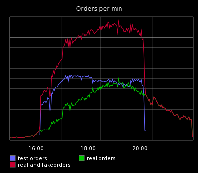

Shout them out as we go. That's more fun.
The same time the DoS happens, of course!
Everyone wants to change everything, all the time.
Let's make an environment like production and run load through that.
Nope. Not done yet...
#YOLO
We deploy 10s of small changes a day and we have alerts. I bet we won't break production
#WhatCouldPossiblyGoWrong?
Let's just do it in production with fake traffic at the same time as customers!